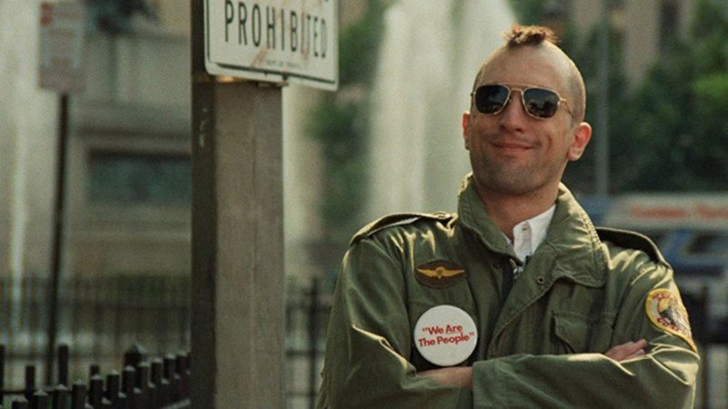

| Em Nova York, em 1987, o belo jovem profissional Patrick Bateman tem uma segunda vida como um horrível assassino em série durante a noite. O elenco é formado pelo detetive, a noiva, a amante, o colega de trabalho e a secretária. Esta é uma comédia de humor seco que examina os elementos que transformam um homem em um monstro. |
|---|
| Data de lançamento: 15 de dezembro de 2000 (Brasil) | Diretora: Mary Harron | Orçamento: US$ 7 milhões | Baseado em: American Psycho por Bret Easton Ellis |
|---|
| O motorista de táxi de Nova York Travis Bickle, veterano da Guerra do Vietnã, reflete constantemente sobre a corrupção da vida ao seu redor e sente-se cada vez mais perturbado com a própria solidão e alienação. Apesar de não conseguir fazer contato emocional com ninguém e viver uma vida questionável em busca de diversão, ele se torna obcecado em ajudar uma prostituta de 12 anos que entra em seu táxi para fugir de um cafetão. |  |
|---|
| Data de lançamento: 22 de março de 1976 (Brasil) |
Prêmio BAFTA de Cinema: Melhor Atriz Coadjuvante, MAIS
|
|---|---|
Alguns Filmes semelhantes a Taxi Driver |
| Trailer | |
|---|---|
| Início Sobre Contato |